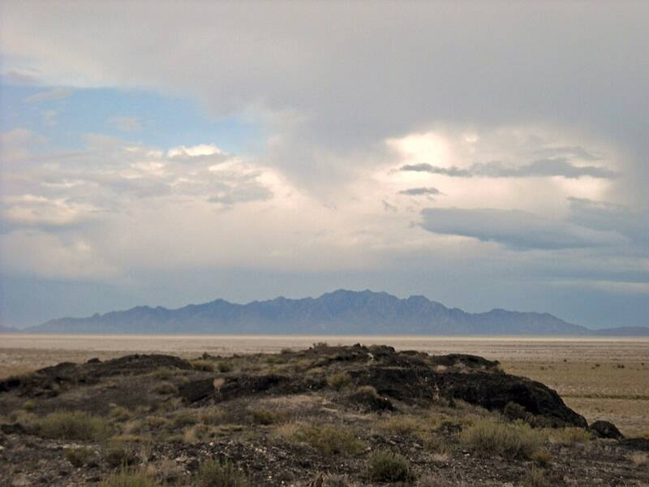

Dugway Proving Ground
Utah

Army chemical and biological defense test site in the Utah desert. 1
Open in the interactive Watcher
Sources
- Dugway Proving Ground Wikipedia
Utah

Army chemical and biological defense test site in the Utah desert. 1
Open in the interactive Watcher